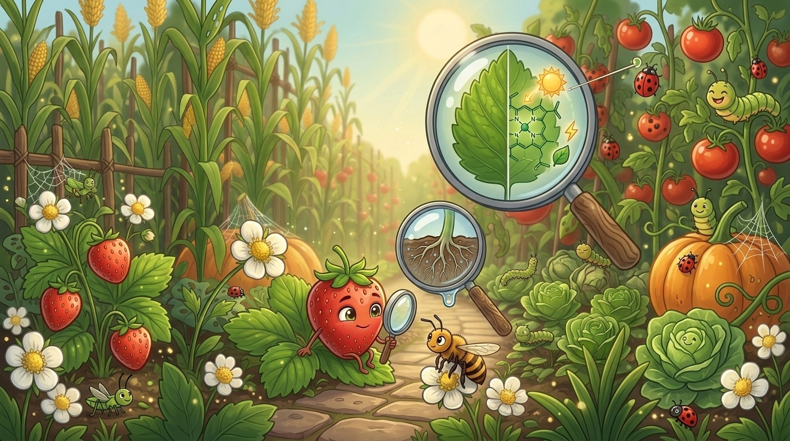
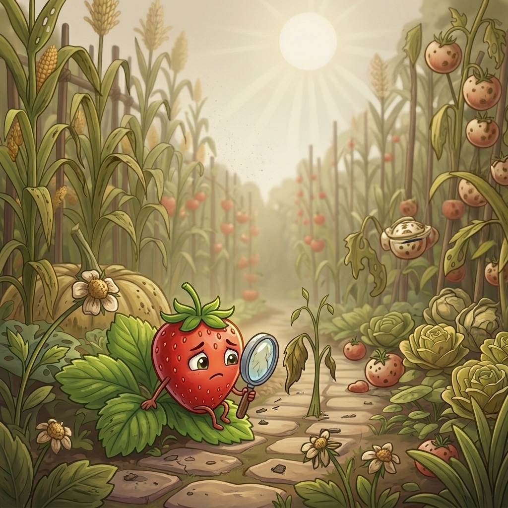
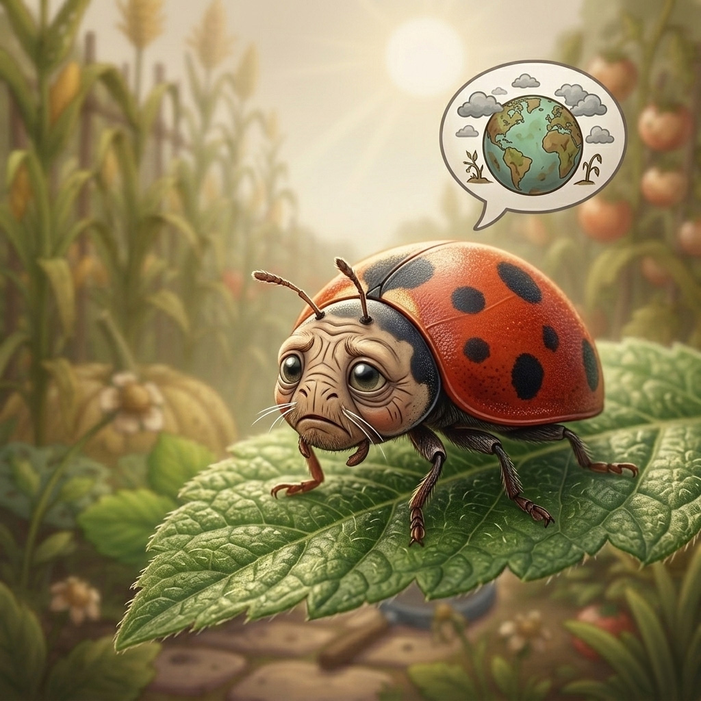
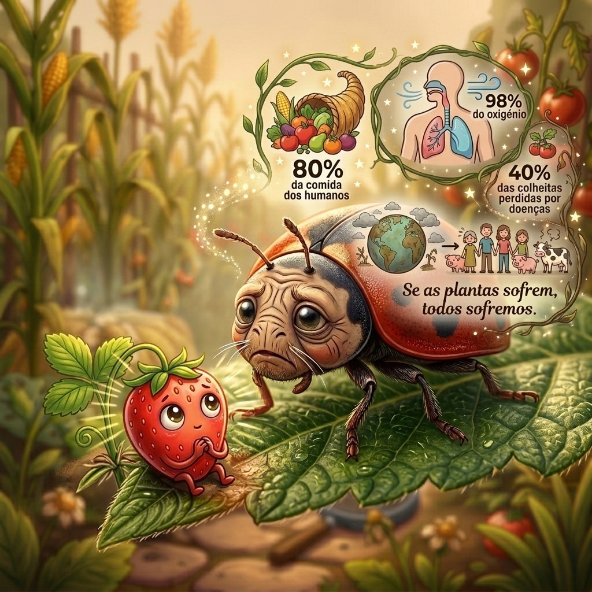
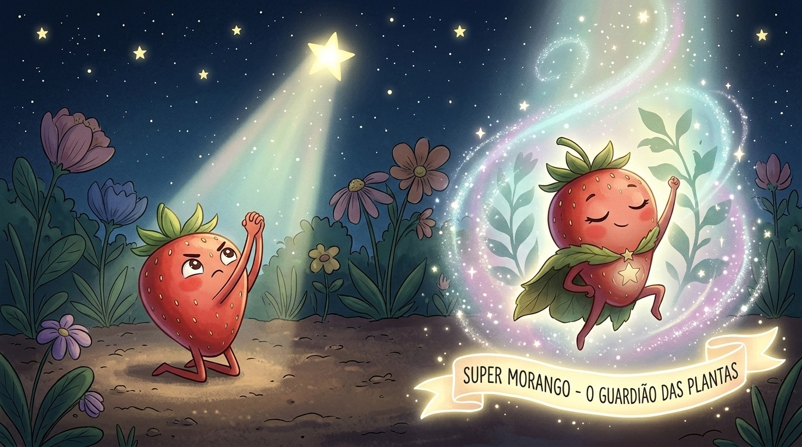
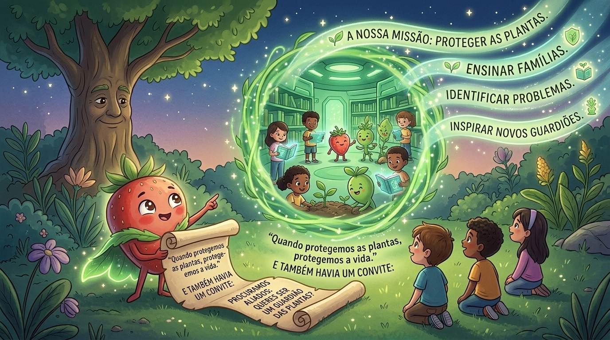

Há muito tempo, num pequeno jardim cheio de vida, crescia um moranguinho diferente de todos os outros. Ele era o mais curioso! Passava os dias a observar as abelhas a trabalhar e como as raízes bebiam água da terra.

Numa manhã silenciosa, ele percebeu algo estranho. As folhas estavam fracas e as flores não abriam. O jardim parecia cansado. O moranguinho sentiu algo novo dentro de si: preocupação.

Uma velha joaninha contou-lhe o segredo: as plantas dão-nos 98% do oxigénio e 80% da comida! Mas pragas e doenças estão a atacar o verde. Se as plantas sofrem, todos sofremos.

Naquela noite, sob as estrelas, ele prometeu: "Eu vou proteger as plantas!". Uma luz mágica caiu sobre ele, iniciando uma transformação extraordinária.

Agora ele é o SUPER MORANGO! Ele abriu um grande portal verde para encontrar aliados corajosos que queiram observar a natureza e proteger as florestas de todo o mundo.

"As plantas são o pulmão e a comida do nosso planeta. Se cuidarmos delas, a Terra continuará viva e forte."
Aceitas o convite para começar o teu treino de campo?